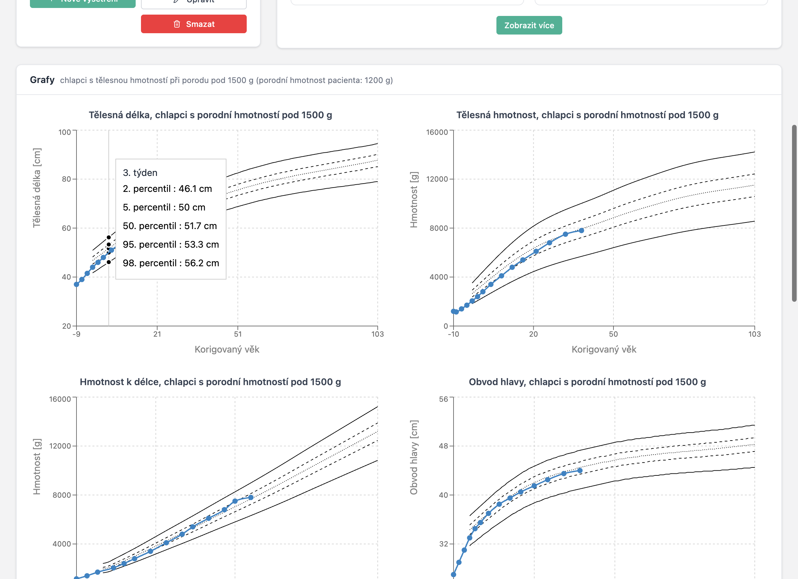

ImaGrow (dříve vydávaná pod názvem Auxologie) je desktopová aplikace určená pro neonatology a pediatrické lékaře, kteří potřebují sledovat růst předčasně narozených dětí. Aplikace je postavena na českých referenčních auxologických datech — percentilových růstových grafech odvozených ze studie 1 781 nedonošených dětí (5 676 vyšetření) v Centru komplexní péče, KDDL VFN Praha, v období 2001–2015.
Všechna data jsou uložena lokálně ve vašem počítači. Aplikace neobsahuje žádnou cloudovou komponentu — funguje zcela offline. Běží na macOS i Windows.
Rozhraní je dostupné v češtině a angličtině. Mezi jazyky lze přepínat kdykoli a vaše preference se zapamatuje.
Stáhnout: macOS (DMG) · Windows (EXE) · Všechny verze
Začínáme
Vytvoření účtu
Při prvním spuštění aplikace se zobrazí přihlašovací obrazovka. Protože aplikace ukládá data lokálně, váš účet existuje pouze na vašem počítači — není sdílen s nikým.
Klikněte na Vytvořit účet pro nastavení uživatelského jména a hesla. Po registraci budete přesměrováni zpět na přihlašovací obrazovku.

Pro přepnutí jazyka rozhraní před přihlášením použijte přepínač EN/CZ v pravém horním rohu přihlašovací stránky. Uvnitř aplikace je stejný přepínač dostupný v dolní části postranního menu.
Přehled pacientů
Po přihlášení se zobrazí přehled. Nahoře jsou čtyři statistické karty (počet pacientů celkem, vyšetření za 7 / 30 dní, počet pacientů vyžadujících pozornost), pod nimi prominentní vyhledávací pole a tabulka nedávných pacientů. Vpravo je panel „Vyžaduje pozornost“ — pacienti, kteří nebyli vyšetřeni přes 30 dní, seřazení podle nejdéle čekajících. Pokud není koho upozorňovat, zobrazí se zelený check „Vše v pořádku“.
Vyhledávání je živé — výsledky se ukazují s krátkou prodlevou při psaní, není potřeba klikat na tlačítko.
Vyhledávací pole rozumí čtyřem typům vstupu:
- Jméno nebo příjmení (s diakritikou i bez ní, např. „novak“, „Nováková“).
- Rodné číslo v plném tvaru včetně lomítka, např.
260212/2457. - Část rodného čísla — stačí prvních 6 číslic (datum narození zakódované v r.č.).
- Datum narození ve tvaru
1.4.2025,01.04.2025nebo1. 4. 2025— aplikace si datum převede a najde všechny děti narozené ten den (s ohledem na +50 měsíc u dívek).
Výsledky se zobrazí v tabulce s ID, jménem, pohlavím, rodným číslem, datem narození, gestačním stářím při narození a porodní hmotností.

Práce s pacienty
Registrace nového pacienta
Klikněte na Nový pacient pro otevření registračního formuláře. Čtyři pole jsou povinná:
- Rodné číslo — české národní identifikační číslo. Aplikace automaticky vypočítá datum narození a ověří kontrolní součet.
- Pohlaví — Dívka nebo Chlapec.
- Porodní hmotnost — v gramech. Maximum je 2500 g.
- Gestační týden při narození — týden gestace (maximum 37).
Volitelně můžete zadat jméno dítěte, plánovaný termín porodu, porodní délku v cm, obvod hlavy při narození v cm a poznámky.
Sekce Matka a Otec jsou ve formuláři defaultně sbalené, protože pro běžnou auxologii nejsou potřeba — rozbalí se kliknutím na „Zobrazit“ v hlavičce sekce. Pokud při editaci pacienta už údaje o rodičích vyplněné jsou, sekce se rozbalí automaticky.

Detail pacienta
Detail pacienta je hlavní pracovní prostor pro jednotlivé dítě. Levý sloupec ukazuje čtyři statistické boxy s nejdůležitějšími fakty — gestační týden při porodu, porodní hmotnost, korigovaný věk a kalendářní věk. Pod nimi jsou sparkline grafy posledních hodnot a v jednom řádku akce (Nové vyšetření, Upravit, Smazat). Méně časté údaje (kalkulovaný a plánovaný termín porodu, aktuální gestační věk) jsou skryté pod tlačítkem „Další údaje o věku a termínu“.
Pravý sloupec ukazuje historii vyšetření jako kompaktní timeline — každé vyšetření jako jeden řádek s datem, korigovaným věkem a třemi naměřenými hodnotami. Edit/smazat ikony se objeví při najetí myší.
V hlavičce stránky vpravo nahoře je tlačítko „← Seznam pacientů“ pro rychlý návrat zpátky.
Karta s údaji o rodičích se zobrazí jen tehdy, když má alespoň jeden z nich vyplněná data; standardně je sklopená a uvnitř se nezobrazují prázdná pole.

Sledování růstu v čase
Hlavním účelem aplikace ImaGrow je sledovat, jak předčasně narozené dítě roste ve srovnání s referenčními daty.
Záznam vyšetření
Na stránce detailu pacienta klikněte na Nové vyšetření. Formulář požaduje datum vyšetření, délku těla a obvod hlavy v centimetrech (s desetinnou čárkou nebo tečkou), hmotnost v gramech a volitelné poznámky.
Vedle každého vstupního pole se zobrazuje subtilní hint s poslední naměřenou hodnotou (např. „naposledy 52.0 cm“). Pokud ještě žádné vyšetření neexistuje, ukáže se porodní hodnota. Klávesa Enter ve formuláři neodesílá — mezi poli se přechází tabulátorem a pro uložení slouží tlačítko vpravo dole.
Živý náhled pod formulářem ukazuje čtyři růstové grafy, které se aktualizují s každým úhozem klávesy. Doktor okamžitě vidí, kde nová hodnota padne v percentilových pásmech, ještě před uložením.

Růstové grafy
Po zaznamenání alespoň jednoho vyšetření se zobrazí čtyři růstové grafy vykreslující měření dítěte proti referenčním percentilovým křivkám. Zobrazené percentilové linie jsou 2., 5., 50., 95. a 98. — vypočtené pomocí metody kvantilové regrese LMS.
Čtyři grafy jsou: délka těla vs. korigovaný věk, hmotnost vs. korigovaný věk, obvod hlavy vs. korigovaný věk a hmotnost k délce.
Referenční křivky jsou vybrány automaticky na základě pohlaví dítěte a zda jeho porodní hmotnost byla nad nebo pod 1500 g. Datové body dítěte jsou spojeny barevnou linií (modrá pro chlapce, červená pro dívky).
Při najetí myší na bod pacienta tooltip ukazuje korigovaný věk, naměřenou hodnotu a vypočtený percentil.
V pravém horním rohu každého grafu je tlačítko Stáhnout (PNG) — kliknutím se uloží obrázek grafu ve dvojnásobném rozlišení, s bílým pozadím a názvem grafu. Soubor má jméno ve tvaru Jméno-Příjmení-Tělesná-délka.png a hodí se k vložení do propouštěcí zprávy.

Tabulková data
Pod grafy je souhrnná tabulka se všemi vyšetřeními. Pro každou návštěvu tabulka ukazuje datum, korigovaný věk a pro každé měření naměřenou hodnotu, percentil a SDS/Z-skóre.
Z-skóre 0 odpovídá 50. percentilu. Hodnoty pod −2 nebo nad +2 indikují měření mimo normální rozsah a mohou vyžadovat klinickou pozornost. Buňky s percentilem pod 1. nebo nad 99. se v tabulce zvýrazňují červeně, aby šly extrémní záznamy snadno najít.

Referenční grafy
Sekce Grafy, přístupná z postranního menu, zobrazuje referenční percentilové křivky bez překrytí daty pacienta.
Čtyři záložky umožňují přepínat mezi referenčními populacemi: chlapci pod 1500 g, dívky pod 1500 g, chlapci nad 1500 g a dívky nad 1500 g.

Profil lékaře
Sekce Profil umožňuje zadat vaše profesní údaje: titul před jménem, jméno, příjmení, titul za jménem a pracoviště.

Zálohování a aktualizace
Aplikace ukládá data výhradně na vašem počítači. Neexistuje cloudová záloha ani synchronizace — pokud se počítač ztratí, rozbije nebo přeinstaluje, mizí s ním i data. Dva praktické způsoby, jak mít bezpečnostní kopii:
Ruční export z aplikace
Na úvodní obrazovce je vpravo nahoře tlačítko Export. Klepnutím se stáhne soubor imagrow-export.json s kompletní databází — pacienti, vyšetření, údaje o rodičích. Uložte ho někam mimo aplikaci: sdílený disk, OneDrive, externí disk. Týdenní rytmus je rozumné minimum; export určitě udělejte před větší změnou (import více pacientů, aktualizace aplikace).
Pokud by se cokoli stalo s vaší instalací, pošlete mi ten JSON e-mailem a data obnovíme. Aplikace zatím nemá tlačítko Import pro svépomocnou obnovu — pokud to bude potřeba, napište mi a doplním ho.
Zálohování celé složky (pro IT nemocnice)
Databáze leží v uživatelském profilu operačního systému:
- Windows:
C:\Users\<uživatel>\AppData\Roaming\ImaGrow\IndexedDB\ - macOS:
~/Library/Application Support/ImaGrow/IndexedDB/
Celá složka IndexedDB je kompletní databáze. IT oddělení může tuto cestu zahrnout do standardní zálohy uživatelských profilů (Windows Backup, roaming profily, Time Machine, OneDrive Known Folder Move). V okamžiku zálohy by aplikace měla být zavřená — soubor LevelDB může být uzamčen běžící aplikací a záloha by pak byla nekonzistentní. Ideální je plánovaná noční záloha mimo pracovní dobu.
Aktualizace na novou verzi
Instalace novější verze se nedotkne databáze. Instalátor nahrazuje jen binárky aplikace v /Applications/ (macOS) nebo Program Files\ImaGrow\ (Windows); vaše data v uvedené profilové složce zůstanou beze změny. Nová verze otevře existující IndexedDB, ověří uložené číslo verze schématu a migraci spustí jen tehdy, když se struktura mezi verzemi změnila.
Doporučený postup aktualizace:
- Otevřít ImaGrow a kliknout Export na úvodní stránce; uložit JSON někam bokem.
- Zavřít ImaGrow.
- Nainstalovat novou verzi (drag-and-drop
.appna macOS, spustit.exena Windows). - Spustit novou verzi a ověřit, že je seznam pacientů pořád vidět.
- Kdyby cokoli nesedělo, pošlete mi JSON uložený v kroku 1.
Při odinstalaci konkrétní verze instalátor defaultně datovou složku ponechá. Databáze se smaže až ručním odstraněním ~/Library/Application Support/ImaGrow/ (macOS) nebo %APPDATA%\ImaGrow\ (Windows), případně zaškrtnutím volby „odstranit uživatelská data", pokud je při odinstalaci nabídnuta.
Další informace
Data a soukromí
Všechna data pacientů jsou uložena v lokální databázi IndexedDB. Nic se nepřenáší po síti. Pro přenos dat na jiný počítač použijte funkci Export.
Automatické odhlášení
Z bezpečnostních důvodů vás aplikace automaticky odhlásí po 60 minutách nečinnosti. 10 minut před vypršením se v horní části aplikace objeví žlutý pruh s odpočtem (např. „Pro nečinnost budete za 9:42 odhlášeni“) a tlačítkem „Zůstat přihlášen“, kterým se odpočet zruší.
Statistické pozadí
| Velikost vzorku | 1 781 dětí (846 dívek, 935 chlapců) |
| Vyšetření | 5 676 celkem |
| Věkový rozsah | 37. až 109. týden gestačního stáří |
| Instituce | Centrum komplexní péče, KDDL VFN Praha |
| Období | 2001–2015 |
| Metoda | Kvantilová regrese LMS |
| Percentily | 2., 5., 50., 95., 98. |
| Měření | Délka těla, hmotnost, obvod hlavy, hmotnost k délce |
| Hmotnostní kategorie | Pod 1500 g / nad 1500 g při narození |